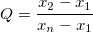

の結果は昇順に並べられ、
の結果は昇順に並べられ、 から
から  の値を出します。
の値を出します。 次のように計算します。
次のように計算します。 ( 最小観測値が外れ値のとき )
または、
(最大観測値が外れ値のとき)
の値を critical と比較します(critical の値は、サンプルサイズ  と 有意水準を使用して 値の表から生成されます)。
と 有意水準を使用して 値の表から生成されます)。
内容 |
DixonのQ検定のダイアログボックスを開くには、メインメニューから以下のように選択します。
以下もご覧下さい。
| 結果ログの出力 |
結果を結果ログに出力するにはチェックします。 |
|---|---|
| 再計算 |
分析結果の再計算を制御します。
詳細は、以下をご覧下さい。分析結果の再計算 |
| 入力 |
(複製)観測値の数は3~10で、1列に入力されている必要があります。 範囲制御についてはこちらを確認してください：入力データを指定する |
| 有意水準 |
オプションリスト:
|
| 外れ値のグラフ |
外れ値のグラフを作成する時に選択します。上側/下側の信頼区間とデータセットの平均値の折れ線グラフ付きの散布図が作成されます。 |
| Q検定のプロットデータ |
外れ値のグラフデータを出力するためのワークシート範囲を指定します(外れ値のグラフが選択されているときに有効)。 範囲制御についてはこちらを確認してください：結果の出力 |
| Grubbsのレポート |
レポート表を出力するワークシート範囲を示します。 |
繰返しのある計測から順に取り出した結果です。
の結果は昇順に並べられ、 から の値を出します。 次のように計算します。 の値を critical と比較します(critical の値は、サンプルサイズ と 有意水準を使用して 値の表から生成されます)。データ範囲内の欠損値は、分析には含まれません。
Stephen L R. Ellison, Vicki J. Barwick and Trevor J Duguid.Farrant.2009.Practical Statistics for the Analytical Scientist.The Royal Society of Chemistry, Cambridge, UK.